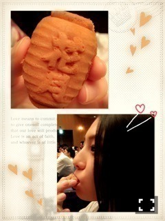
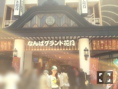

| 2015/05 29 Fri | いつまでも笑っていたい_(． ．*)vol.30 |
みなさんこんばんはー！
さがらいおりです！
先日、大阪に行ってきました♡
NGKーー！！！
ママと２人で日帰り！！
新喜劇観てきたんです！！
すっっっっごい面白かったヽ(*^о^*)ノ
まず本公演 1 回目は
[漫才•落語]
ヒューマン中村さん
ジャングルポケットさん
銀シャリさん
シャンプーハットさん
テンダラーさん
カートヤング×犬の心SP
桂楽珍さん
ザ•ぼんちさん
西川のりお•上方よしおさん
カートヤングさんといぬころさんの
コントがすごい面白かったし、
シャンプーハットさんの
ネタは初めて観られたし、
テンダラーさんは
テレビでしか観たこと無かったけど
生だと 10 倍面白かった！！！
ヒューマン中村さんも
テレビで何回か観て面白いなって思ってたから
観ることができて嬉しかった♪♪
ジャンポケの斉藤さん
本当に声が大きかった( ´艸｀)
あと太田さんの喋り方が好き
銀シャリさんも好きなの♡
ベテランの方々の漫才も
勢いがあってすごく面白かったです！！！
もう大満足でした♪♪
[新喜劇]
｢すち子の逮捕すんのかい！｣を観てきた♡♡
ドリルすんのかいせんのかい観れた♡
すごい嬉しかった♡
面白かったーーー♡
もう笑いすぎましたヽ(*^о^*)ノ
ほんっとに楽しかったです♡♡
[大坂の陣新喜劇番外編～女たちの戦国時代～]
4 月頃にやってた
[大坂の陣新喜劇～戦国降幕 笑う忍～]は
観てないんですけど、
それでもすごい楽しめました(´,,•ω•,,)♡
見たかったネタも
たくさん見ることできたし
とてもいい思い出になりました。
劇場内の
ポテトとベビーカステラも
美味しかった(*^^)v

グッズもこれまた
たくさん買ってしまいました♡
部屋のお笑い棚が
結構充実してきましたよ(。-∀-)
DVDも
欲しいもの結構あるから
少しずつ集めようかな♡へへ
また行きたいなぁ！！！
今度は漫才劇場にも行ってみたい！
合間に観光もしたんだよー！
心斎橋行ったり
天神橋筋商店街行って
たくさん食べたり♡
中村屋のコロッケ食べられて
嬉しかったー♪♪
地元の方で
30 個とか買ってる方がいたりしたから
売り切れ前に食べられて運がよかった♡
ホントに美味しかった！！
いおりも
皆さんにこうやって
たっくさんの笑顔を届けられるように
もっと頑張らないとーー！！

告知
anan発売中
BLT発売中
BLTはノギカメラも
担当してます！！
チェックよろしくお願いします！
次のブログで
個握のお話します！
お笑いのお話ばかりで
すみませんm(_ _)m
あと、最近コメントで
今度初めてお笑いライブ見に行きます！
とか
いおりちゃんきっかけで
興味持って初めて行ってきました！
とか
あたしも○○さん好きなんです！
とか
趣味とか話が合う方が
増えてきた気がして、
嬉しい楽しいhappyです♪♪
コメント返しとかも
できたらやりたいな！
あたし755やってないし！
いおりも
みり愛みたいな
大喜利的なのやりたいなぁ( p_q)
i o r i .

コメント(278)
2015/05/29 22:48